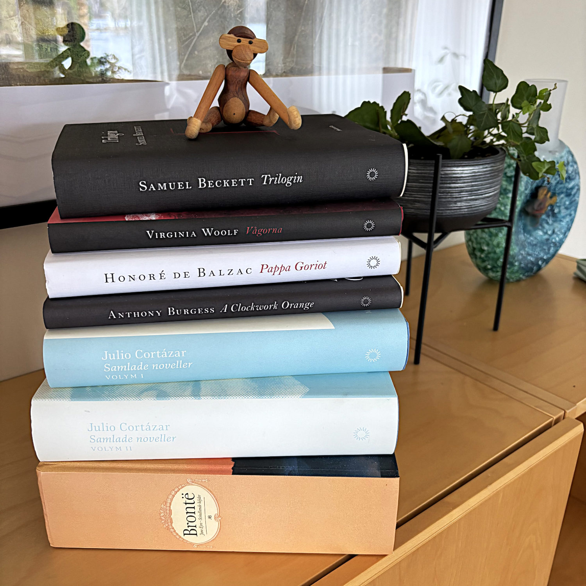

Letter #5
March 27, 2026
In previous newsletters I wrote from the position of someone in transition, moving from a safe lifestyle to something new. I had jumped into the unknown but my feet had not yet touched ground.
Now I have safely landed — and it feels right. This is who I am now.
The change also meant shifting from an efficiency-oriented environment to a creative process. I discovered that my proven productivity-methods and habits were no longer applicable. I wrote an essay about this called What the painting wants to become.
The same insights led me to (once again) restructure the home page to better reflect my new way of working. Check it out and let me know what you think.
After the last newsletter I finished my first comic. Finally! As mentioned, the story is about a wildlife photography couple who find themselves trapped in the wilderness. You can read it here: Little Eagle Down
Little Eagle Down took more out of me than I expected. Now there's a new manuscript — the black void — sitting in a drawer. The honest question is whether I'm a writer who draws, or if I should stop drawing and let other people create the art for my future comics. I don't have an answer yet.
The final project in the creative writing (II) course was a short story in Swedish. I wrote Tjugonde november, a historical fiction piece about the hours just before the battle of Narva in 1700.
The professor gave useful feedback that I applied in this final version. Mainly advice regarding trimming details and keeping narrator consistency. (Originally I had an all-knowing narrator in some sections) Now the story is strictly told from the perspective of the main character, commandant Horn.
Writing continues with a new short story. It'll be in Swedish and about a group of people discovering that time is starting and stopping.
Reading is an important part of writing and I picked up a couple of classics that will keep me busy for a while. Titles are in Swedish but you'll recognize the authors.

I also completed the course in music production which gave me an excuse to produce something from a written score.
In the final project I mixed guitar and computer instruments into a produced song. Instruments are sampled from a real orchestra so they sound very much like the real thing.
There was so much to choose from, that for the intro I just picked an instrument at random: a transverse flute. I used to hate the sound of that instrument when I was in school. Now it was magical to hear the notes I had first imagined in my head, almost like they were being played by a real person.
The result is a long and slow flute intro, but in the middle the song picks up tempo and more instruments are added (including me on electric guitar in the background).
It might not be a keeper but it's a milestone since it's my first song from pen & paper to final mix. It doesn't have a name but you can listen to it here. (But only if you promise to stick at least to the middle!):
When it comes to painting I'm on a plateau. The last completed painting is no better or worse than the previous ones.

There are several paintings in chronological order on the site and I can't spot any progress over time. Take a look for yourself and let me know what you see.
This spring I'm attending music theory at Gothenburg University. The main discovery so far is that with ear training, the ability to identify which notes are played in a chord can apparently be trained. Although they say it takes a year or two of short daily practice.
I'm curious to experience what it sounds like on the inside to hear each chord note separately.
The comic manuscript is still in the drawer. Maybe the question isn’t whether to draw it or not, but whether I need to focus on fewer practice areas. That one might take just as long to answer as learning to identify notes by ear.